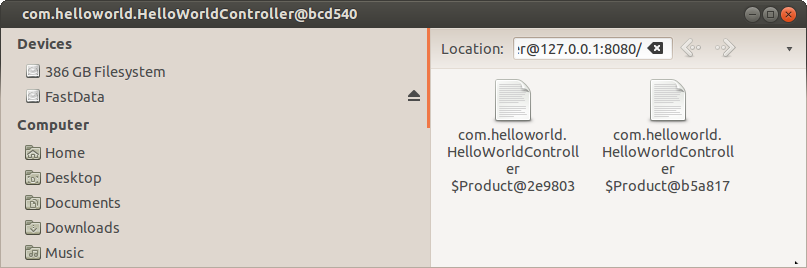
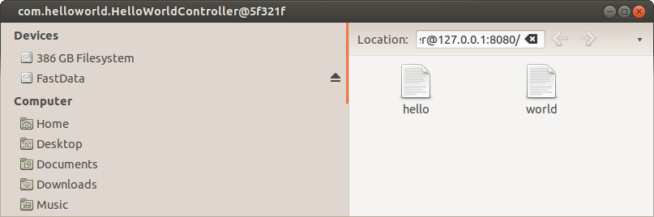

We'll use maven to run the web application:
mvn jetty:run
You should see some logs being printed out to the console. If you havent used maven before it will download all the jars it needs for jetty etc, and this can take a couple of minutes.
If all goes well you'll end up with this in the logs
INFO io.milton.config.HttpManagerBuilder - Configuring default user and password: user/password for SimpleSecurityManager INFO io.milton.config.HttpManagerBuilder - Starting io.milton.http.http11.auth.ExpiredNonceRemover@1c6d8f0 this will remove Digest nonces from memory when they expire 2013-03-10 13:46:03.978:INFO::Started SelectChannelConnector@0.0.0.0:8080 Started Jetty Server
Note that by default the credentials to login are user and password, and the server is running on port 8080
So now you can connect to http://localhost:8080 using a webdav client (No you cant use a web browser yet!!). How you connect depends on your operating system:
I'm on linux so here's what i see:

AHHHH!!! Whats with the horrible name!!!???
Well, we havent actually told milton how to get the name for our products, so what would we expect it to do? The trick is to make the name available on a sensible bean property like name, or use an annotation. I'll just use a sensible bean property name, by adding this to our Product class:
public String getName() {
return name;
}
So stop the server and run it again, then refresh your webdav client and you should see something like this:

Ah, now that looks better!
But, they look like files, and we wanted folders? How to make them folders? See the next page...